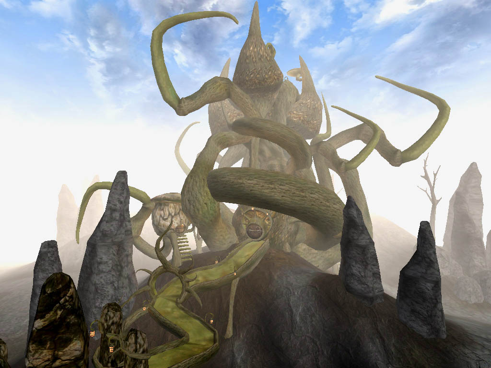

| Tel Uvirith |
| Alignment: Telvanni |
| Region: Molag Amur |
|
Transport:
Almsivi Intervention:
Divine Intervention:
|
Services:
|
|  Tel Uvirith after completion |
Tel Uvirith is a Telvanni stronghold in the Molag Amur region, located on the site of Uvirith's Grave. Players who advance to the House Telvanni rank of Mouth will be able to construct it by undertaking the related questline.
Tel Uvirith differs from the other two Great House strongholds in that it consists of a single tower arrayed with pods for the NPC dwellings and lacks a defensive wall. Dwemer Centurions are provided for fortification instead.
Tel Uvirith is the least populated of the Great House strongholds and is the only one to lack NPC trainers. It is moderately spacious but features little storage in the way of containers. Notably, however, there is a permanent corpse in the tower dungeon that has an unlimited inventory.
There are four merchants located at Tel Uvirith, two of which offer additional services in enchanting and spellmaking. Travel and other services are available at Sadrith Mora and Wolverine Hall to the east (accessible via Divine Intervention), and Molag Mar to the west (via Almsivi Intervention). Wolverine Hall's Mages Guild provides Guild Guide service to other Mages Guild locations throughout Vvardenfell. From Sadrith Mora, boat charters call at Dagon Fel, Ebonheart, Tel Branora and Tel Mora, while boat charters from Molag Mar in the east call at Hla Oad, Vivec and Tel Branora. Molag Mar additionally provides Silt Strider service to Suran and Vivec. The nearest Propylon Chamber is located at Falensarano to the north.